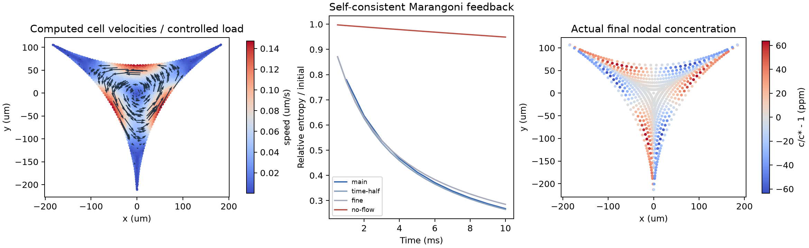

← FROTH 研究入口PROJECT 06 / CLOSED-SECTION NUMERICAL VERIFICATION
让浓度、界面应力与流动
在同一次求解中相互反馈。
真实弯曲三角截面上的 Stokes / Marangoni / 对流扩散松弛。8 组静态检查 + 8 组对照，105 个时间步；速度与节点场均来自数值解。
6.7 × 10⁻¹⁶保存节点场的总表活量相对误差
26.5% / 94.9%10 ms 后有流动 / 仅扩散的相对自由能
1.22%时间步 1 → 0.5 ms 的终态自由能差异

矢量 PDF · 单元速度 · 流函数 · 初末浓度与容量
这是封闭入口、固定几何、瞬时 Henry 平衡、稀溶液与低 Reynolds 数下的局部数值验证。尚未与进液膜、运动几何、空间网络、气体扩散或破裂连接；没有实验标定。左图为受控表面张力载荷，右图为浓度驱动反馈，两者不是同一速度状态。
执行矩阵与可复核数据
n 是初始弧采样数，Delaunay 边界加密后节点数会增加。浓度初值 c/c* = 1 + ε Re[(x/r + iy/r)³]；ε 是形状函数系数，不能直接当作实际浓度百分比。主算例 ε=.01，另有均匀态与 ε=.1 对照。物理时长均为 10 ms。
全部耦合结果与限制 · 静态矩阵及原始残差 · 保存数据独立收支复核 · 版本、参数及运行源码哈希
守恒与耗散怎样连接
无散 BDM 速度由连续 P2 流函数的旋度得到，固定边界的法向流为零。体相对流通量来自流函数差，界面对流和 Marangoni 应力使用同一边界积分，并构造伴随的力—通量算子。体相与界面逆向流分别迎风，避免相互抵消后丢失耗散。全隐式 Newton 同时解浓度与流函数，不裁剪浓度、不归一化质量。
ΔH + DBE + Δt (Ddiff + Dvisc+SIP + Dupwind) = residual
H 是该封闭、固定域模型的理想 Henry 相对自由能。后向 Euler 凸性余项、扩散、黏性和迎风耗散均单独输出。黏性离散形式中的 SIP 面项仍属于数值耦合项，不能全部称为真实体相黏性耗散。独立 CSV 审计检查四项非负性、逐步能量式和保存节点的总量。
通过了什么，仍欠缺什么
静态功率残差、无散、法向零流、投影动量残差、零载荷及载荷加倍检查全部通过。粗网格流函数解与混合 BDM/P0 解的速度系数相对差为 2.21×10⁻¹⁰。最细静态解功率差 4.70×10⁻¹²、归一化散度 1.86×10⁻¹²、法向漏流 6.06×10⁻¹⁶。所有松弛算例保持正浓度、量守恒及自由能非增，均匀态保持不变；最大 Re≈0.009。
静态 n144 → n192 输入功率差 0.484%；SIP10 / SIP40 相对 SIP20 差 0.447% / 0.818%。松弛 n96 → n144 在 dt=.5ms 下的终态自由能绝对值差约 6.11%，归一化比例从 .26465 变为 .28513：仍需空间加密。这些通过项证明有限离散系统的收支和求解一致性，不证明连续解已收敛。
失败记录及修正
早期 Taylor–Hood 法向乘子原型仍有点态漏流；干尖点的混合求解病态。现截面按 h=.8μm 开口截断，但本批将开口封闭，且开口不计为气液界面。首次正式 Newton 在原始动量残差约 1.4×10⁻¹⁰ 处受舍入限制，浓度残差约 10⁻¹⁵。现报告原始与对角平衡后的残差，采用后者判停，并在力和扩散计算中减去常数基态以减小消去误差。
无流动对照首次实现漏写右端 1/Δt，量误差门槛将其拒绝；已修正并重跑。两类失败日志与拒绝结果均在研究仓库 results/logs/section-hydro/ 保留。没有通过改写收支、裁剪场或放宽质量门槛掩盖失败。
下一阶段
先推导开口进液与出口数据的通量、表面储存和能量边界项，建立几何守恒；再接有限膜—边界交换与运动截面。随后进入空间网络、粗化与 CODA 事件接口。H(div)、流函数与 SIP 是既有方法，本阶段不以数值工具的组合主张创新。
Ayuso de Dios 等：散度自由 Stokes / H(div) 方法背景 · 实现、推导与运行脚本